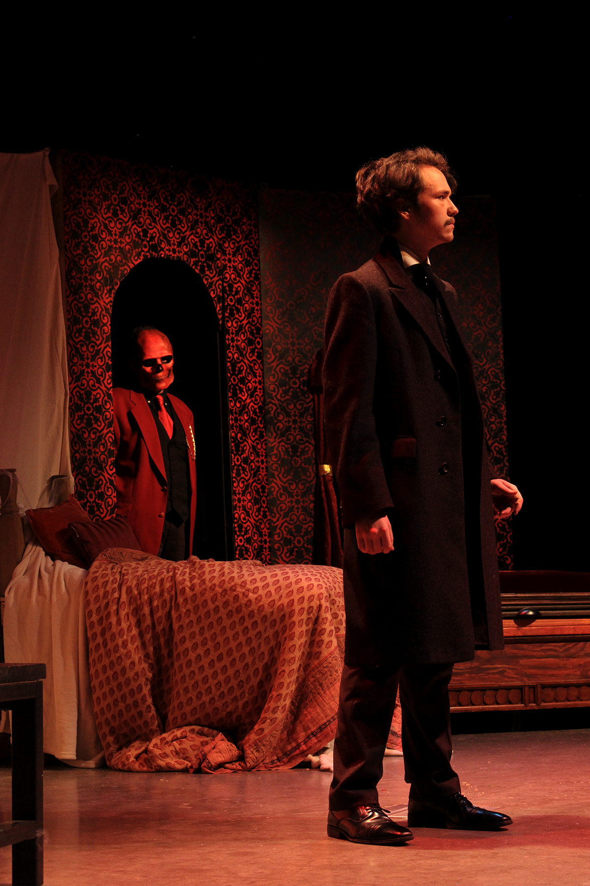
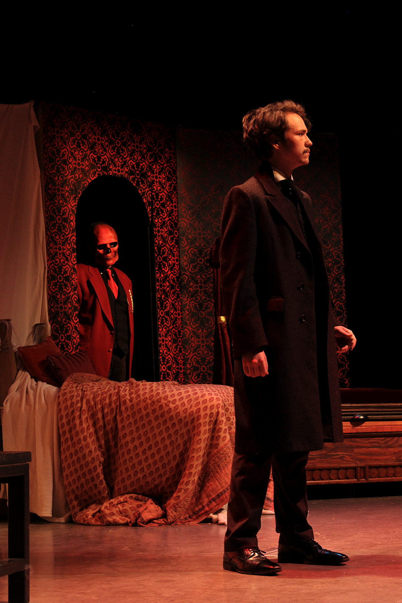
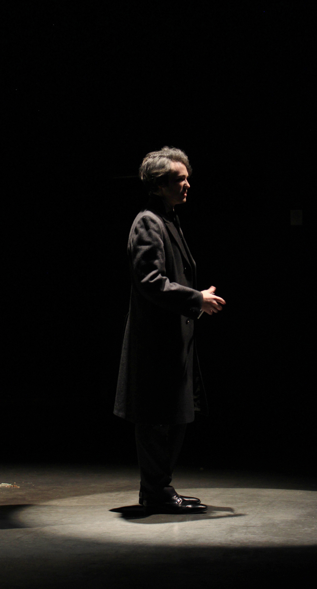
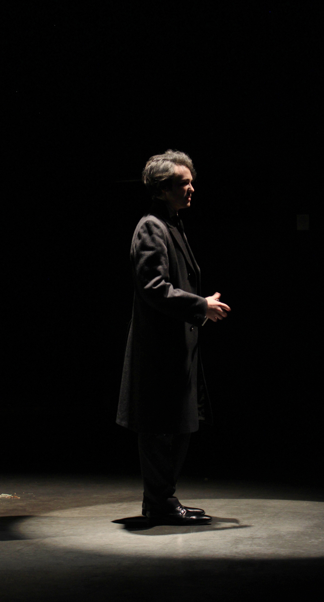
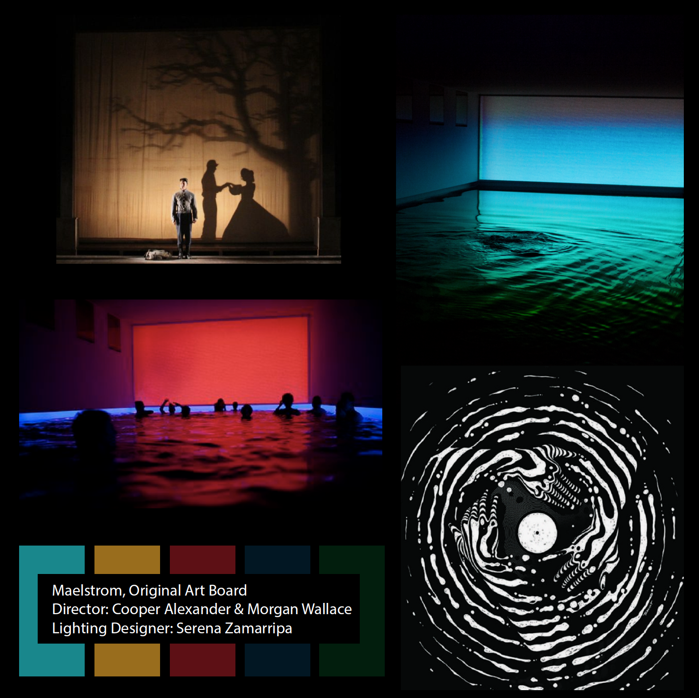
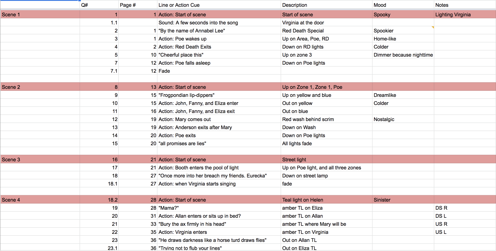
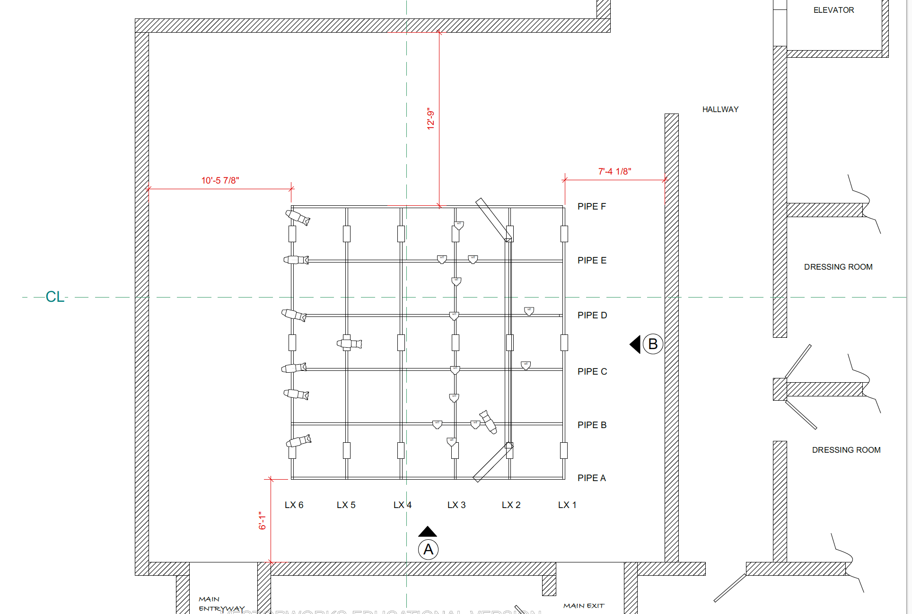

Maelstrom
Role: Lighting Designer, Photographer
Playwright: Don Nigro
Directors: Cooper Alexander, Morgan Wallace
University of Texas Theatre Guild
Maelstrom is a play detailing the life, memories, and insanity of American poet, Edgar Allan Poe. This was my first experience as a lighting designer!
 



 



Concept
The play istelf is multi-faceted in a number of ways--it is hilarious, heartwarming, confusing, heartwrenching, terrifying, and dreamlike. I wanted to create a lighting scheme that would allow all of those nuances to be seen and felt by the audience. The color pallete I chose included a lot of light blues, ambers, and reds. I tried to focus not only on having the actors be well-lit, but for each lighting cue and color to have meaning within the narrative. I was also in charge of creating silhouettes throughout the show. The tree sillouette--the commanding image of the show--was created using a cutout of a tree, 8 ft of muslin scrim, and two ETC Source 4 PARs that were on stands backstage.
  